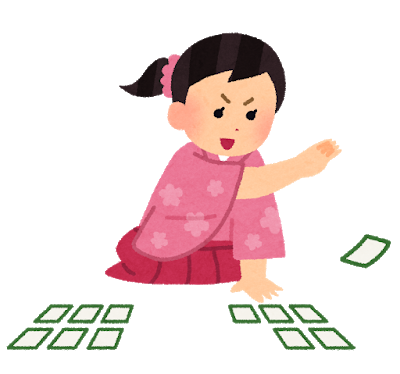
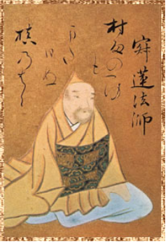
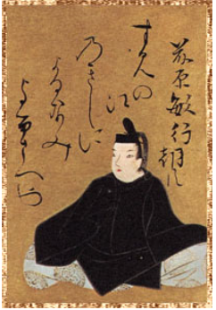
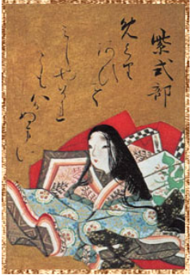
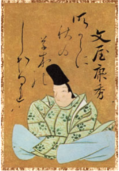
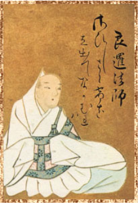

トップページ
百人一首
Quizアプリ

一字決まり札を覚えよう！
面白い覚え札を覚えよう！
ランダムクイズへ挑戦！！
トップページ
Page 2
一字決まりとは？？
一字決まりとは、上の句の1文字目を聞けば、下の句を特定することができる札です。
百首ある中で、一字決まりは七首存在します。覚え方は、七首の上の句の一文字目を合わせて
むすめふさほせ
で覚えよう！
では次へ！！
次へ
戻る
page 2
page 3

寂蓮法師
じゃくれんほうし
村雨の 露もまだ干ぬ 槇の葉に 霧立ちのぼる 秋の夕暮れ
上の句
むらさめの つゆもまだひぬ まきのはに
下の句
きりたちのぼる あきのゆうぐれ
次へ
戻る
page 4
page 4

藤原敏行朝臣
ふじわらのとしゆきあそん
住の江の 岸に寄る波 よるさへや 夢の通ひ路 人目よくらむ
上の句
すみのえの きしによるなみ よるさへや
下の句
ゆめのかよいじ ひとめよくらん
次へ
戻る
page 5
page 5

次へ
戻る
page 6
page 6

次へ
戻る
page 7
page 7

次へ
戻る
page 8
page 8
次へ
戻る
page 9
page 9
トップページへ戻る
トップページ
ランダムクイズ
クイズページ
Pop page
トップページ
ランダムクイズ
next
結果は？？
トップページへ戻る